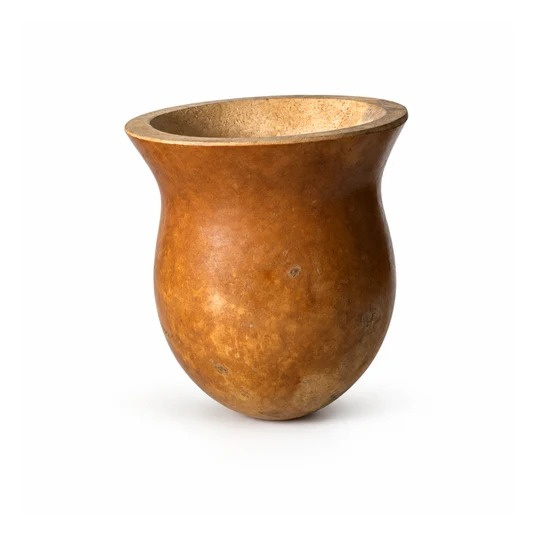

El ritual
Un ritual, paso a paso.
Paso 1 de 5
Llená el mate hasta tres cuartas partes.
Paso 2 de 5
Tapá la boca con la mano, agitá y dejá el mate de costado: la yerba se junta de un lado y queda un hueco del otro.
Paso 3 de 5
Con el mate todavía de costado, mojá el hueco con un poco de agua fría o a temperatura ambiente y dejá reposar unos minutos.
Paso 4 de 5
Tapala con el dedo y clavala en la parte húmeda, hasta el fondo. Después, no la muevas más.
Paso 5 de 5
Agua a 70–80 °C, nunca hervida. Vertí despacio, siempre en el mismo lugar, junto a la bombilla.